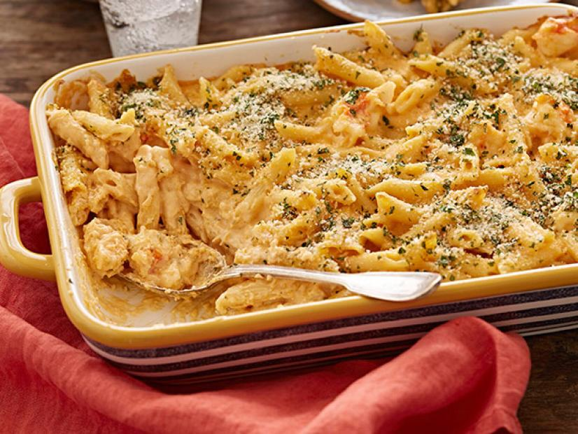

Beef Tenderloin
Roasted with a spicy chili infusion, served medium rare and topped with chimichurri salsa.
Delmonico
Hand-cut 20oz bone-in top loin steak topped with a pink peppercorn, cognac and leek reduction.
Prime Rib

Aged 8oz prime rib slow roasted in rock salt and served with au jus and freshly grated horseradish.
New Orleans Bouillabaisse
Petite prawns, Andouille sausage, mirepoix and Cajun cream sauce sereved over red rice.
Coho Salmon
Oven-roasted wild salmon with chervil kumquat pesto.
Duck
Oven-roasted organic duck boneless breast topped with Champagne vinaigrette, pancetta and pickled red onions.
Veal Scalloppini
Thinly pounded grilled veal chop stuffed with yellow peppers, San Marzano tomatoes and ricotta salata.
Lobster Macaroni and Cheese

Gruyere, Irish Cheddar, and Cotija cheese, bay shrimp and chunks of Maine lobster baked with heavy cream and penne pasta.